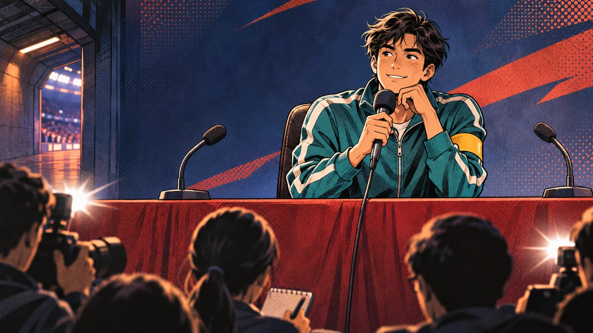

Аскар, твой выход!
Футбольный кубок
Найди мячи, пробей по воротам и дай интервью на китайском.
Играть
Разминка
Нажми на картинку, послушай и повтори.
Для урока с преподавателем
Послушайте три слова, а затем сыграйте без подсказок. После игры поменяйтесь ролями: Аскар спрашивает 你喜欢什么运动？ (Nǐ xǐhuan shénme yùndòng?), а преподаватель отвечает.
Если легко, добавьте 最 (zuì) «больше всего» и 也 (yě) «тоже» по одному. Например, 我最喜欢足球。我也喜欢篮球。